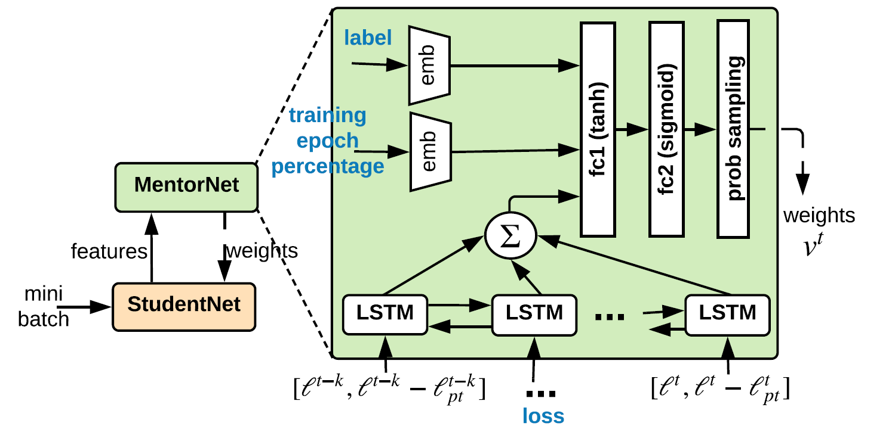

MoCo
Motivation
动量对比学习(Momentum Contrast, MoCo)用于图象表征的无监督学习。主要的观点是将对比学习看作是一种字典查询，即给定一个图片的编码作为请求，在字典中找到与之对应的图片编码。并依此提出了在视觉领域中，使用这种方法需要面临的两个关键点：一是字典应尽可能的大；二是在训练过程中用于编码字典的编码器应尽可能地保持一致，也就是要保证所有的图片都大致映射到了同一个表征空间中。为解决第一个问题，作者提出了使用队列动态维护字典；针对第二个问题，使用动量更新的方法去修改编码器的参数。
Introduction
Background
无监督学习的方法在自然语言处理(NLP)领域取得了很大的成功，这得益于在 NLP 中，模型面对的输入信号是离散的，同时易于分割成小的单元来建造字典或者对应的表征。而在视觉领域，输入的信号是连续的、高维度的、非结构化的，想要得到同样效果的稀疏的表征是很困难的。
无监督学习在大型无标记数据集上的使用是非常值得关注的，使用无监督学习来与训练得到的表征也能用于下游任务的学习。但他的效果却并不如目前的监督式学习效果好。若能很好的解决这一表征学习的问题，则能大大缩小监督与无监督学习之间的差距。
Retated Work
为了解决以上提出的问题，很多研究提出了不同的基于对比学习的方法。
loss function
最早期的方法中，我们的目标是寻找一种编码器负责降维以及特征的学习，以成对的数据作为输入，以他们的距离来表达相似度。为此，损失函数分为两部分，前者用来缩小相似数据的距离，后者用来扩大不相似数据的距离。
之后转化成使用互信息建模，提出 InfoNCE 损失函数。采样正负样本进行训练。最终普遍使用的是非参数化的softmax函数。
\[P(i|v)=\frac{\exp(v_i^Tv/\tau)}{\sum_{j=1}^{n}{\exp(v_j^Tv/\tau)}}\]
contrastive loss mechanisms
end-to-end
端到端的方法中，当前的batch被作为字典进行训练，query和key分别采用不同的编码器，并分别进行梯度下降。由于算力的限制，更大的字典难以进行梯度的计算，同时他也受限于batch的大小。他的一致性保持得很好，因为一个batch字典的编码器总是同一个，但缺点是字典数量难以保证。
memory bank
另一种机制是提前将所有样本的编码计算出来，每次query时，会在所有样本中再进行采样作为字典。同时，我们不再对key的编码器进行梯度下降，而是直接使用query的参数。注意，这里的更新是不及时的，每次只有当前被采样的样本编码被更新了。这样字典大小的问题解决了，但一致性的问题却变得棘手，因为每次采样的编码可能是由不同的编码器(参数不同)得到。
novelty
MoCo 提出使用队列来动态维护字典，成功做到了字典大小完全不依赖batch的大小。新的batch被加入到队列中，最旧的batch会被移除。这样，队列中的keys使用的编码器是连续、平滑的更新的。
第二点是key编码器参数的更新上，并不是直接复制query的参数，而是动量更新，更加的平滑，保证了一致性。
Methodology

dict look-up
与上文提到的 memory-bank 方法类似，根据一个样本，通过随机变换得到新样本作为正例，之后取 K 个负例求出 InfoNCE loss 进行优化。不同的是负例的选择方式和编码器的更新方式。
Momentum Contrast
queue
每次取得一个新的batch数据进行随机增强作为请求 q，再做另一种随机增强作为每个单独请求的正例 k。将队列中的全部元素作为每个请求的负例，求得损失，利用梯度下降更新参数。随后将 k 加入到队列中，同时去掉旧的batch。 由于队列的规模会很大，队列中的编码加入队列后并不会再更新，但这并不会妨碍一致性的保证，因为它总会把最不一致的编码去除掉。
Momentum update
在更新参数时，只对query的编码器参数进行梯度下降，而对key编码器进行如下更新: \[\theta_k \leftarrow m\theta_k+(1-m)\theta_q\]
而在实验中，稍大的 m 得到的结果会更好，这也印证了一致性的重要。
Pretext Task
前置任务与 memory-bank 类似。这里作者采用了 ResNet 作为编码器，而作者通过实验发现 BN 对编码的学习起到了消极的作用，而这可能是由于 BN 融合了当前batch的信息，在一定程度上会使模型”走捷径”。
对 BN 的问题，作者提出了 shuffling BN 的方法，也就是在 BN 前先将 sample 进行打乱，求得编码后再复原。
Experiments
training
数据集采用的是
ImageNet: 包含约 1 百万张图片，1000 个类别。图片的类别分布均匀
Instagram: 由 Instagram 中得到的约 10 亿张图片。具有长尾分布。
这里作者是将特征层冻结，微调线性分类层来验证模型的效果。与众多无监督模型进行比对。
findings
在微调MoCo时，一些超参数与监督式学习模型相差很大，这表明他们的特征分布有较大的差异
通过与 end-to-end 和 memory-bank 两种方法的对比可以发现，当字典规模较小时，end-to-end 模型和 MoCo 不相上下，memory-bank 则稍逊风骚；但增大字典规模后，end-to-end 模型则受限于算力，无法计算，其他两个模型都可以持续增加，但 MoCo 则明显胜出许多。说明 MoCo 很大的提升了无监督学习的效果。
若完全复制query编码器参数，则无法收敛
MoCo 可以很好的作为pre-trained模型进行下游任务的学习。
conclusion
MoCo 提供了一种对比学习的框架，在能够使字典尽可能大的同时，还可以保证表征空间的一致性。这是一种非常简洁而有效的方法。
References
Kaiming He and Haoqi Fan and Yuxin Wu and Saining Xie and Ross Girshick. Momentum Contrast for Unsupervised Visual Representation Learning. arXiv:1911.05722,2020